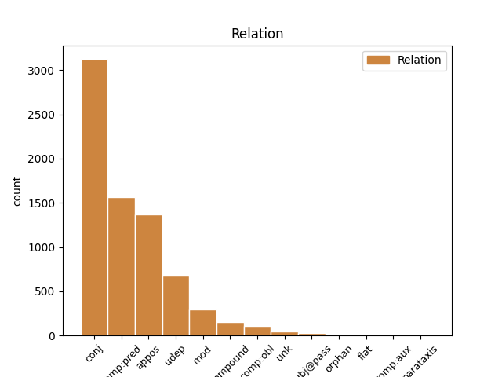
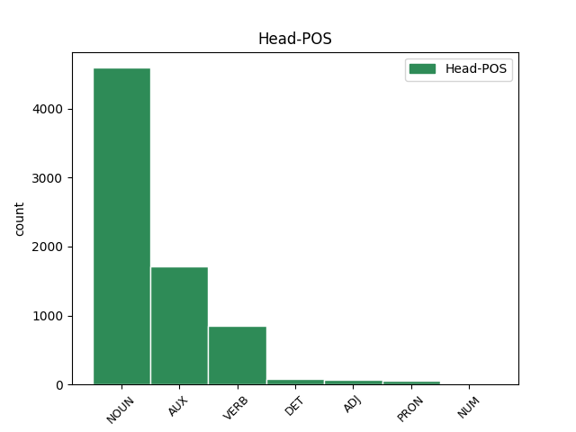
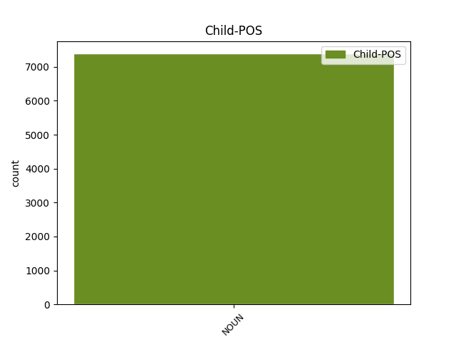

Distribution of features within this leaf



Agreement Rules sorted by frequency.
- When the dependent token is the conjunct(conj) of the head token, and the dependent token is NOUN.
1 Conviene _ _ _ _ 0 _ _ _
2 que _ _ _ _ 0 _ _ _
3 ahora _ _ _ _ 0 _ _ _
4 , _ _ _ _ 0 _ _ _
5 en _ _ _ _ 0 _ _ _
6 plena _ _ _ _ 0 _ _ _
7 apoteosis _ _ _ _ 0 _ _ _
8 de _ _ _ _ 0 _ _ _
9 pre-presidencia _ _ _ _ 0 _ _ _
10 ( _ _ _ _ 0 _ _ _
11 presidiremos _ _ _ _ 0 _ _ _
12 la _ _ _ _ 0 _ _ _
13 Unión _ _ _ _ 0 _ _ _
14 Europea _ _ _ _ 0 _ _ _
15 dentro _ _ _ _ 0 _ _ _
16 de _ _ _ _ 0 _ _ _
17 unos _ _ _ _ 0 _ _ _
18 meses _ _ _ _ 0 _ _ _
19 : _ _ _ _ 0 _ _ _
20 rogativas rogativa NOUN NOUN Gender=Fem|Number=Plur 0 _ _ _
21 y _ _ _ _ 0 _ _ _
22 festejos festejo NOUN NOUN Gender=Masc|Number=Plur 20 conj _ _
23 son _ _ _ _ 0 _ _ _
24 de _ _ _ _ 0 _ _ _
25 rigor _ _ _ _ 0 _ _ _
26 ) _ _ _ _ 0 _ _ _
27 reflexionemos _ _ _ _ 0 _ _ _
28 críticamente _ _ _ _ 0 _ _ _
29 y _ _ _ _ 0 _ _ _
30 nos _ _ _ _ 0 _ _ _
31 hagamos _ _ _ _ 0 _ _ _
32 un _ _ _ _ 0 _ _ _
33 lifting _ _ _ _ 0 _ _ _
34 metodológico _ _ _ _ 0 _ _ _
35 . _ _ _ _ 0 _ _ _
1 Son ser AUX AUX Mood=Ind|Number=Plur|Person=3|Tense=Pres|VerbForm=Fin 0 _ _ _
2 amigos amigo NOUN NOUN Gender=Masc|Number=Plur 1 comp:pred _ SpaceAfter=No
3 , _ _ _ _ 0 _ _ _
4 un _ _ _ _ 0 _ _ _
5 conocimiento _ _ _ _ 0 _ _ _
6 , _ _ _ _ 0 _ _ _
7 aunque _ _ _ _ 0 _ _ _
8 Después _ _ _ _ 0 _ _ _
9 no _ _ _ _ 0 _ _ _
10 hay _ _ _ _ 0 _ _ _
11 quien _ _ _ _ 0 _ _ _
12 pesque _ _ _ _ 0 _ _ _
13 una _ _ _ _ 0 _ _ _
14 sardina _ _ _ _ 0 _ _ _
15 en _ _ _ _ 0 _ _ _
16 sus _ _ _ _ 0 _ _ _
17 aguas _ _ _ _ 0 _ _ _
18 turbias _ _ _ _ 0 _ _ _
19 ni _ _ _ _ 0 _ _ _
20 que _ _ _ _ 0 _ _ _
21 en _ _ _ _ 0 _ _ _
22 el _ _ _ _ 0 _ _ _
23 momento _ _ _ _ 0 _ _ _
24 de _ _ _ _ 0 _ _ _
25 la _ _ _ _ 0 _ _ _
26 verdad _ _ _ _ 0 _ _ _
27 echen _ _ _ _ 0 _ _ _
28 un _ _ _ _ 0 _ _ _
29 cable _ _ _ _ 0 _ _ _
30 en _ _ _ _ 0 _ _ _
31 la _ _ _ _ 0 _ _ _
32 cosa _ _ _ _ 0 _ _ _
33 de _ _ _ _ 0 _ _ _
34 los _ _ _ _ 0 _ _ _
35 fondos _ _ _ _ 0 _ _ _
36 y _ _ _ _ 0 _ _ _
37 las _ _ _ _ 0 _ _ _
38 políticas _ _ _ _ 0 _ _ _
39 regionales _ _ _ _ 0 _ _ _
40 : _ _ _ _ 0 _ _ _
41 el _ _ _ _ 0 _ _ _
42 gazpacho _ _ _ _ 0 _ _ _
43 y _ _ _ _ 0 _ _ _
44 el _ _ _ _ 0 _ _ _
45 Ribera _ _ _ _ 0 _ _ _
46 del _ _ _ _ 0 _ _ _
47 Duero _ _ _ _ 0 _ _ _
48 tienen _ _ _ _ 0 _ _ _
49 una _ _ _ _ 0 _ _ _
50 virtualidad _ _ _ _ 0 _ _ _
51 limitada _ _ _ _ 0 _ _ _
52 . _ _ _ _ 0 _ _ _
1 En _ _ _ _ 0 _ _ _
2 el _ _ _ _ 0 _ _ _
3 ecuador _ _ _ _ 0 _ _ _
4 del _ _ _ _ 0 _ _ _
5 poder _ _ _ _ 0 _ _ _
6 los _ _ _ _ 0 _ _ _
7 señores señor NOUN NOUN Gender=Masc|Number=Plur 0 _ _ _
8 primeros _ _ _ _ 0 _ _ _
9 ministros ministro NOUN NOUN Gender=Masc|Number=Plur 7 appos _ _
10 sucumben _ _ _ _ 0 _ _ _
11 aquí _ _ _ _ 0 _ _ _
12 casi _ _ _ _ 0 _ _ _
13 siempre _ _ _ _ 0 _ _ _
14 a _ _ _ _ 0 _ _ _
15 la _ _ _ _ 0 _ _ _
16 tentación _ _ _ _ 0 _ _ _
17 de _ _ _ _ 0 _ _ _
18 " _ _ _ _ 0 _ _ _
19 hacer _ _ _ _ 0 _ _ _
20 el _ _ _ _ 0 _ _ _
21 Kissinger _ _ _ _ 0 _ _ _
22 " _ _ _ _ 0 _ _ _
23 , _ _ _ _ 0 _ _ _
24 una _ _ _ _ 0 _ _ _
25 figura _ _ _ _ 0 _ _ _
26 taurina _ _ _ _ 0 _ _ _
27 de _ _ _ _ 0 _ _ _
28 reconocida _ _ _ _ 0 _ _ _
29 eficacia _ _ _ _ 0 _ _ _
30 y _ _ _ _ 0 _ _ _
31 diversión _ _ _ _ 0 _ _ _
32 . _ _ _ _ 0 _ _ _
1 Van _ _ _ _ 0 _ _ _
2 a _ _ _ _ 0 _ _ _
3 por _ _ _ _ 0 _ _ _
4 todas _ _ _ _ 0 _ _ _
5 : _ _ _ _ 0 _ _ _
6 un _ _ _ _ 0 _ _ _
7 día día NOUN NOUN Gender=Masc|Number=Sing 16 udep _ _
8 el _ _ _ _ 0 _ _ _
9 ministro _ _ _ _ 0 _ _ _
10 del _ _ _ _ 0 _ _ _
11 ramo _ _ _ _ 0 _ _ _
12 , _ _ _ _ 0 _ _ _
13 Josep _ _ _ _ 0 _ _ _
14 Piqué _ _ _ _ 0 _ _ _
15 , _ _ _ _ 0 _ _ _
16 saluda saludar VERB VERB Mood=Ind|Number=Sing|Person=3|Tense=Pres|VerbForm=Fin 0 _ _ _
17 los _ _ _ _ 0 _ _ _
18 esfuerzos _ _ _ _ 0 _ _ _
19 del _ _ _ _ 0 _ _ _
20 Gobierno _ _ _ _ 0 _ _ _
21 argelino _ _ _ _ 0 _ _ _
22 en _ _ _ _ 0 _ _ _
23 el _ _ _ _ 0 _ _ _
24 respeto _ _ _ _ 0 _ _ _
25 a _ _ _ _ 0 _ _ _
26 los _ _ _ _ 0 _ _ _
27 derechos _ _ _ _ 0 _ _ _
28 humanos _ _ _ _ 0 _ _ _
29 y _ _ _ _ 0 _ _ _
30 la _ _ _ _ 0 _ _ _
31 democracia _ _ _ _ 0 _ _ _
32 : _ _ _ _ 0 _ _ _
33 lo _ _ _ _ 0 _ _ _
34 hace _ _ _ _ 0 _ _ _
35 oportunamente _ _ _ _ 0 _ _ _
36 , _ _ _ _ 0 _ _ _
37 cuando _ _ _ _ 0 _ _ _
38 tres _ _ _ _ 0 _ _ _
39 días _ _ _ _ 0 _ _ _
40 antes _ _ _ _ 0 _ _ _
41 el _ _ _ _ 0 _ _ _
42 Ejército _ _ _ _ 0 _ _ _
43 argelino _ _ _ _ 0 _ _ _
44 ha _ _ _ _ 0 _ _ _
45 disparado _ _ _ _ 0 _ _ _
46 contra _ _ _ _ 0 _ _ _
47 una _ _ _ _ 0 _ _ _
48 manifestación _ _ _ _ 0 _ _ _
49 en _ _ _ _ 0 _ _ _
50 Tizi _ _ _ _ 0 _ _ _
51 Uzú _ _ _ _ 0 _ _ _
52 y _ _ _ _ 0 _ _ _
53 deja _ _ _ _ 0 _ _ _
54 un _ _ _ _ 0 _ _ _
55 balance _ _ _ _ 0 _ _ _
56 de _ _ _ _ 0 _ _ _
57 un _ _ _ _ 0 _ _ _
58 centenar _ _ _ _ 0 _ _ _
59 de _ _ _ _ 0 _ _ _
60 víctimas _ _ _ _ 0 _ _ _
61 mortales _ _ _ _ 0 _ _ _
62 . _ _ _ _ 0 _ _ _
1 Un _ _ _ _ 0 _ _ _
2 mundo _ _ _ _ 0 _ _ _
3 , _ _ _ _ 0 _ _ _
4 ciertamente _ _ _ _ 0 _ _ _
5 , _ _ _ _ 0 _ _ _
6 muy _ _ _ _ 0 _ _ _
7 machista _ _ _ _ 0 _ _ _
8 , _ _ _ _ 0 _ _ _
9 que _ _ _ _ 0 _ _ _
10 ha _ _ _ _ 0 _ _ _
11 removido _ _ _ _ 0 _ _ _
12 Sara _ _ _ _ 0 _ _ _
13 en _ _ _ _ 0 _ _ _
14 plan plan NOUN NOUN Gender=Masc|Number=Sing 0 _ _ _
15 vendaval vendaval NOUN NOUN Gender=Masc|Number=Sing 14 mod _ SpaceAfter=No
16 : _ _ _ _ 0 _ _ _
17 " _ _ _ _ 0 _ _ _
18 El _ _ _ _ 0 _ _ _
19 flamenco _ _ _ _ 0 _ _ _
20 fue _ _ _ _ 0 _ _ _
21 una _ _ _ _ 0 _ _ _
22 cosa _ _ _ _ 0 _ _ _
23 de _ _ _ _ 0 _ _ _
24 hombres _ _ _ _ 0 _ _ _
25 ; _ _ _ _ 0 _ _ _
26 ahora _ _ _ _ 0 _ _ _
27 es _ _ _ _ 0 _ _ _
28 de _ _ _ _ 0 _ _ _
29 todos _ _ _ _ 0 _ _ _
30 , _ _ _ _ 0 _ _ _
31 de _ _ _ _ 0 _ _ _
32 hombres _ _ _ _ 0 _ _ _
33 y _ _ _ _ 0 _ _ _
34 mujeres _ _ _ _ 0 _ _ _
35 " _ _ _ _ 0 _ _ _
36 . _ _ _ _ 0 _ _ _
1 La _ _ _ _ 0 _ _ _
2 actuación _ _ _ _ 0 _ _ _
3 formaba formar VERB VERB Mood=Ind|Number=Sing|Person=3|Tense=Imp|VerbForm=Fin 0 _ _ _
4 parte parte NOUN NOUN Number=Sing 3 compound _ _
5 del _ _ _ _ 0 _ _ _
6 ciclo _ _ _ _ 0 _ _ _
7 La _ _ _ _ 0 _ _ _
8 capsa _ _ _ _ 0 _ _ _
9 de _ _ _ _ 0 _ _ _
10 música _ _ _ _ 0 _ _ _
11 . _ _ _ _ 0 _ _ _
1 Cambiar _ _ _ _ 0 _ _ _
2 las _ _ _ _ 0 _ _ _
3 formas _ _ _ _ 0 _ _ _
4 parece _ _ _ _ 0 _ _ _
5 de _ _ _ _ 0 _ _ _
6 rigor _ _ _ _ 0 _ _ _
7 , _ _ _ _ 0 _ _ _
8 pero _ _ _ _ 0 _ _ _
9 , _ _ _ _ 0 _ _ _
10 en _ _ _ _ 0 _ _ _
11 el _ _ _ _ 0 _ _ _
12 fondo _ _ _ _ 0 _ _ _
13 , _ _ _ _ 0 _ _ _
14 el _ _ _ _ 0 _ _ _
15 fondo fondo NOUN NOUN Gender=Masc|Number=Sing 17 comp:obl _ _
16 no _ _ _ _ 0 _ _ _
17 hay haber AUX AUX Mood=Ind|Number=Sing|Person=3|Tense=Pres|VerbForm=Fin 0 _ _ _
18 quien _ _ _ _ 0 _ _ _
19 lo _ _ _ _ 0 _ _ _
20 cambie _ _ _ _ 0 _ _ _
21 . _ _ _ _ 0 _ _ _
1 Tantas _ _ _ _ 0 _ _ _
2 efusiones efusión NOUN NOUN Gender=Fem|Number=Plur 7 unk _ SpaceAfter=No
3 ... _ _ _ _ 0 _ _ _
4 ¿ _ _ _ _ 0 _ _ _
5 Qué _ _ _ _ 0 _ _ _
6 se _ _ _ _ 0 _ _ _
7 hicieron hacer VERB VERB Mood=Ind|Number=Plur|Person=3|Tense=Past|VerbForm=Fin 0 _ _ _
8 ? _ _ _ _ 0 _ _ _
9 ¿ _ _ _ _ 0 _ _ _
10 para _ _ _ _ 0 _ _ _
11 Qué _ _ _ _ 0 _ _ _
12 sirvieron _ _ _ _ 0 _ _ _
13 ? _ _ _ _ 0 _ _ _
14 . _ _ _ _ 0 _ _ _
1 Adornaban _ _ _ _ 0 _ _ _
2 el _ _ _ _ 0 _ _ _
3 edificio _ _ _ _ 0 _ _ _
4 Novíssim _ _ _ _ 0 _ _ _
5 , _ _ _ _ 0 _ _ _
6 cuyas _ _ _ _ 0 _ _ _
7 cuatro _ _ _ _ 0 _ _ _
8 plantas planta NOUN NOUN Gender=Fem|Number=Plur 10 subj@pass _ _
9 superiores _ _ _ _ 0 _ _ _
10 están estar AUX AUX Mood=Ind|Number=Plur|Person=3|Tense=Pres|VerbForm=Fin 0 _ _ _
11 siendo _ _ _ _ 0 _ _ _
12 demolidas _ _ _ _ 0 _ _ _
13 . _ _ _ _ 0 _ _ _
1 - _ _ _ _ 0 _ _ _
2 - _ _ _ _ 0 _ _ _
3 Teatro _ _ _ _ 0 _ _ _
4 , _ _ _ _ 0 _ _ _
5 cine cine NOUN NOUN Gender=Masc|Number=Sing 0 _ _ _
6 y _ _ _ _ 0 _ _ _
7 música música NOUN NOUN Gender=Fem|Number=Sing 5 orphan _ SpaceAfter=No
8 . _ _ _ _ 0 _ _ _
1 Para _ _ _ _ 0 _ _ _
2 que _ _ _ _ 0 _ _ _
3 sea _ _ _ _ 0 _ _ _
4 posible _ _ _ _ 0 _ _ _
5 la _ _ _ _ 0 _ _ _
6 ampliación _ _ _ _ 0 _ _ _
7 , _ _ _ _ 0 _ _ _
8 sostiene _ _ _ _ 0 _ _ _
9 , _ _ _ _ 0 _ _ _
10 hay _ _ _ _ 0 _ _ _
11 que _ _ _ _ 0 _ _ _
12 resolver _ _ _ _ 0 _ _ _
13 también _ _ _ _ 0 _ _ _
14 los _ _ _ _ 0 _ _ _
15 mecanismos _ _ _ _ 0 _ _ _
16 de _ _ _ _ 0 _ _ _
17 toma _ _ _ _ 0 _ _ _
18 de _ _ _ _ 0 _ _ _
19 decisión _ _ _ _ 0 _ _ _
20 en _ _ _ _ 0 _ _ _
21 la _ _ _ _ 0 _ _ _
22 UE _ _ _ _ 0 _ _ _
23 y _ _ _ _ 0 _ _ _
24 definir _ _ _ _ 0 _ _ _
25 el _ _ _ _ 0 _ _ _
26 reparto reparto NOUN NOUN Gender=Masc|Number=Sing 34 comp:aux _ _
27 de _ _ _ _ 0 _ _ _
28 competencias _ _ _ _ 0 _ _ _
29 a _ _ _ _ 0 _ _ _
30 largo _ _ _ _ 0 _ _ _
31 plazo _ _ _ _ 0 _ _ _
32 , _ _ _ _ 0 _ _ _
33 que _ _ _ _ 0 _ _ _
34 debe deber AUX AUX Mood=Ind|Number=Sing|Person=3|Tense=Pres|VerbForm=Fin 0 _ _ _
35 ser _ _ _ _ 0 _ _ _
36 entre _ _ _ _ 0 _ _ _
37 Europa _ _ _ _ 0 _ _ _
38 , _ _ _ _ 0 _ _ _
39 las _ _ _ _ 0 _ _ _
40 naciones _ _ _ _ 0 _ _ _
41 y _ _ _ _ 0 _ _ _
42 las _ _ _ _ 0 _ _ _
43 regiones _ _ _ _ 0 _ _ _
44 . _ _ _ _ 0 _ _ _
1 La _ _ _ _ 0 _ _ _
2 lista _ _ _ _ 0 _ _ _
3 al _ _ _ _ 0 _ _ _
4 Senado _ _ _ _ 0 _ _ _
5 la _ _ _ _ 0 _ _ _
6 componen _ _ _ _ 0 _ _ _
7 el _ _ _ _ 0 _ _ _
8 sindicalista _ _ _ _ 0 _ _ _
9 y _ _ _ _ 0 _ _ _
10 responsable _ _ _ _ 0 _ _ _
11 federal _ _ _ _ 0 _ _ _
12 de _ _ _ _ 0 _ _ _
13 Movimiento _ _ _ _ 0 _ _ _
14 Obrero _ _ _ _ 0 _ _ _
15 del _ _ _ _ 0 _ _ _
16 PCE _ _ _ _ 0 _ _ _
17 , _ _ _ _ 0 _ _ _
18 Francisco _ _ _ _ 0 _ _ _
19 Javier _ _ _ _ 0 _ _ _
20 Alcazar _ _ _ _ 0 _ _ _
21 , _ _ _ _ 0 _ _ _
22 el _ _ _ _ 0 _ _ _
23 miembro _ _ _ _ 0 _ _ _
24 de _ _ _ _ 0 _ _ _
25 Ecologistas _ _ _ _ 0 _ _ _
26 en _ _ _ _ 0 _ _ _
27 Acción _ _ _ _ 0 _ _ _
28 Juan _ _ _ _ 0 _ _ _
29 Antonio _ _ _ _ 0 _ _ _
30 Conesa _ _ _ _ 0 _ _ _
31 , _ _ _ _ 0 _ _ _
32 y _ _ _ _ 0 _ _ _
33 la _ _ _ _ 0 _ _ _
34 abogada _ _ _ _ 0 _ _ _
35 Francisca _ _ _ _ 0 _ _ _
36 Pinos _ _ _ _ 0 _ _ _
37 Montoya _ _ _ _ 0 _ _ _
38 , _ _ _ _ 0 _ _ _
39 estos _ _ _ _ 0 _ _ _
40 dos dos NUM NUM Number=Plur|NumType=Card 0 _ _ _
41 últimos _ _ _ _ 0 _ _ _
42 independientes independiente NOUN NOUN Number=Plur 40 flat _ SpaceAfter=No
43 . _ _ _ _ 0 _ _ _
Disagree Examples:
1 La _ _ _ _ 0 _ _ _
2 inversión _ _ _ _ 0 _ _ _
3 en _ _ _ _ 0 _ _ _
4 investigación _ _ _ _ 0 _ _ _
5 básica _ _ _ _ 0 _ _ _
6 es _ _ _ _ 0 _ _ _
7 el _ _ _ _ 0 _ _ _
8 camino _ _ _ _ 0 _ _ _
9 para _ _ _ _ 0 _ _ _
10 el _ _ _ _ 0 _ _ _
11 crecimiento _ _ _ _ 0 _ _ _
12 y _ _ _ _ 0 _ _ _
13 la _ _ _ _ 0 _ _ _
14 prosperidad _ _ _ _ 0 _ _ _
15 económica _ _ _ _ 0 _ _ _
16 , _ _ _ _ 0 _ _ _
17 afirmaron _ _ _ _ 0 _ _ _
18 hoy _ _ _ _ 0 _ _ _
19 empresarios empresario NOUN NOUN Gender=Masc|Number=Plur 0 _ _ _
20 , _ _ _ _ 0 _ _ _
21 el _ _ _ _ 0 _ _ _
22 embajador embajador NOUN NOUN Gender=Masc|Number=Sing 19 appos _ _
23 de _ _ _ _ 0 _ _ _
24 EEUU _ _ _ _ 0 _ _ _
25 y _ _ _ _ 0 _ _ _
26 el _ _ _ _ 0 _ _ _
27 director _ _ _ _ 0 _ _ _
28 de _ _ _ _ 0 _ _ _
29 investigación _ _ _ _ 0 _ _ _
30 de _ _ _ _ 0 _ _ _
31 la _ _ _ _ 0 _ _ _
32 Comunidad _ _ _ _ 0 _ _ _
33 de _ _ _ _ 0 _ _ _
34 Madrid _ _ _ _ 0 _ _ _
35 , _ _ _ _ 0 _ _ _
36 quienes _ _ _ _ 0 _ _ _
37 abogaron _ _ _ _ 0 _ _ _
38 por _ _ _ _ 0 _ _ _
39 elevar _ _ _ _ 0 _ _ _
40 la _ _ _ _ 0 _ _ _
41 " _ _ _ _ 0 _ _ _
42 cultura _ _ _ _ 0 _ _ _
43 científica _ _ _ _ 0 _ _ _
44 " _ _ _ _ 0 _ _ _
45 de _ _ _ _ 0 _ _ _
46 los _ _ _ _ 0 _ _ _
47 ciudadanos _ _ _ _ 0 _ _ _
48 y _ _ _ _ 0 _ _ _
49 la _ _ _ _ 0 _ _ _
50 " _ _ _ _ 0 _ _ _
51 cultura _ _ _ _ 0 _ _ _
52 de _ _ _ _ 0 _ _ _
53 la _ _ _ _ 0 _ _ _
54 innovación _ _ _ _ 0 _ _ _
55 " _ _ _ _ 0 _ _ _
56 de _ _ _ _ 0 _ _ _
57 los _ _ _ _ 0 _ _ _
58 empresarios _ _ _ _ 0 _ _ _
59 . _ _ _ _ 0 _ _ _
1 La _ _ _ _ 0 _ _ _
2 inversión _ _ _ _ 0 _ _ _
3 en _ _ _ _ 0 _ _ _
4 investigación _ _ _ _ 0 _ _ _
5 básica _ _ _ _ 0 _ _ _
6 es _ _ _ _ 0 _ _ _
7 el _ _ _ _ 0 _ _ _
8 camino _ _ _ _ 0 _ _ _
9 para _ _ _ _ 0 _ _ _
10 el _ _ _ _ 0 _ _ _
11 crecimiento _ _ _ _ 0 _ _ _
12 y _ _ _ _ 0 _ _ _
13 la _ _ _ _ 0 _ _ _
14 prosperidad _ _ _ _ 0 _ _ _
15 económica _ _ _ _ 0 _ _ _
16 , _ _ _ _ 0 _ _ _
17 afirmaron _ _ _ _ 0 _ _ _
18 hoy _ _ _ _ 0 _ _ _
19 empresarios empresario NOUN NOUN Gender=Masc|Number=Plur 0 _ _ _
20 , _ _ _ _ 0 _ _ _
21 el _ _ _ _ 0 _ _ _
22 embajador _ _ _ _ 0 _ _ _
23 de _ _ _ _ 0 _ _ _
24 EEUU _ _ _ _ 0 _ _ _
25 y _ _ _ _ 0 _ _ _
26 el _ _ _ _ 0 _ _ _
27 director director NOUN NOUN Gender=Masc|Number=Sing 19 conj _ _
28 de _ _ _ _ 0 _ _ _
29 investigación _ _ _ _ 0 _ _ _
30 de _ _ _ _ 0 _ _ _
31 la _ _ _ _ 0 _ _ _
32 Comunidad _ _ _ _ 0 _ _ _
33 de _ _ _ _ 0 _ _ _
34 Madrid _ _ _ _ 0 _ _ _
35 , _ _ _ _ 0 _ _ _
36 quienes _ _ _ _ 0 _ _ _
37 abogaron _ _ _ _ 0 _ _ _
38 por _ _ _ _ 0 _ _ _
39 elevar _ _ _ _ 0 _ _ _
40 la _ _ _ _ 0 _ _ _
41 " _ _ _ _ 0 _ _ _
42 cultura _ _ _ _ 0 _ _ _
43 científica _ _ _ _ 0 _ _ _
44 " _ _ _ _ 0 _ _ _
45 de _ _ _ _ 0 _ _ _
46 los _ _ _ _ 0 _ _ _
47 ciudadanos _ _ _ _ 0 _ _ _
48 y _ _ _ _ 0 _ _ _
49 la _ _ _ _ 0 _ _ _
50 " _ _ _ _ 0 _ _ _
51 cultura _ _ _ _ 0 _ _ _
52 de _ _ _ _ 0 _ _ _
53 la _ _ _ _ 0 _ _ _
54 innovación _ _ _ _ 0 _ _ _
55 " _ _ _ _ 0 _ _ _
56 de _ _ _ _ 0 _ _ _
57 los _ _ _ _ 0 _ _ _
58 empresarios _ _ _ _ 0 _ _ _
59 . _ _ _ _ 0 _ _ _
1 Para _ _ _ _ 0 _ _ _
2 el _ _ _ _ 0 _ _ _
3 director _ _ _ _ 0 _ _ _
4 general _ _ _ _ 0 _ _ _
5 de _ _ _ _ 0 _ _ _
6 Investigación _ _ _ _ 0 _ _ _
7 de _ _ _ _ 0 _ _ _
8 la _ _ _ _ 0 _ _ _
9 CAM _ _ _ _ 0 _ _ _
10 , _ _ _ _ 0 _ _ _
11 Francisco _ _ _ _ 0 _ _ _
12 José _ _ _ _ 0 _ _ _
13 Rubia _ _ _ _ 0 _ _ _
14 , _ _ _ _ 0 _ _ _
15 es _ _ _ _ 0 _ _ _
16 necesario _ _ _ _ 0 _ _ _
17 apoyar _ _ _ _ 0 _ _ _
18 a _ _ _ _ 0 _ _ _
19 fondo _ _ _ _ 0 _ _ _
20 la _ _ _ _ 0 _ _ _
21 investigación _ _ _ _ 0 _ _ _
22 de _ _ _ _ 0 _ _ _
23 calidad _ _ _ _ 0 _ _ _
24 e _ _ _ _ 0 _ _ _
25 incentivar _ _ _ _ 0 _ _ _
26 con _ _ _ _ 0 _ _ _
27 diferentes _ _ _ _ 0 _ _ _
28 medidas _ _ _ _ 0 _ _ _
29 la _ _ _ _ 0 _ _ _
30 colaboración _ _ _ _ 0 _ _ _
31 entre _ _ _ _ 0 _ _ _
32 los _ _ _ _ 0 _ _ _
33 científicos _ _ _ _ 0 _ _ _
34 y _ _ _ _ 0 _ _ _
35 técnicos técnico NOUN NOUN Gender=Masc|Number=Plur 0 _ _ _
36 y _ _ _ _ 0 _ _ _
37 el _ _ _ _ 0 _ _ _
38 sector sector NOUN NOUN Gender=Masc|Number=Sing 35 conj _ _
39 productivo _ _ _ _ 0 _ _ _
40 . _ _ _ _ 0 _ _ _
1 Hernando _ _ _ _ 0 _ _ _
2 fundamentó fundamentar VERB VERB Mood=Ind|Number=Sing|Person=3|Tense=Past|VerbForm=Fin 0 _ _ _
3 tales _ _ _ _ 0 _ _ _
4 premisas premisa NOUN NOUN Gender=Fem|Number=Plur 2 comp:obl _ _
5 en _ _ _ _ 0 _ _ _
6 que _ _ _ _ 0 _ _ _
7 se _ _ _ _ 0 _ _ _
8 trata _ _ _ _ 0 _ _ _
9 de _ _ _ _ 0 _ _ _
10 defender _ _ _ _ 0 _ _ _
11 los _ _ _ _ 0 _ _ _
12 intereses _ _ _ _ 0 _ _ _
13 generales _ _ _ _ 0 _ _ _
14 de _ _ _ _ 0 _ _ _
15 los _ _ _ _ 0 _ _ _
16 españoles _ _ _ _ 0 _ _ _
17 , _ _ _ _ 0 _ _ _
18 máxime _ _ _ _ 0 _ _ _
19 teniendo _ _ _ _ 0 _ _ _
20 en _ _ _ _ 0 _ _ _
21 cuenta _ _ _ _ 0 _ _ _
22 que _ _ _ _ 0 _ _ _
23 España _ _ _ _ 0 _ _ _
24 es _ _ _ _ 0 _ _ _
25 el _ _ _ _ 0 _ _ _
26 país _ _ _ _ 0 _ _ _
27 de _ _ _ _ 0 _ _ _
28 la _ _ _ _ 0 _ _ _
29 Unión _ _ _ _ 0 _ _ _
30 Europea _ _ _ _ 0 _ _ _
31 que _ _ _ _ 0 _ _ _
32 más _ _ _ _ 0 _ _ _
33 empleo _ _ _ _ 0 _ _ _
34 ha _ _ _ _ 0 _ _ _
35 creado _ _ _ _ 0 _ _ _
36 y _ _ _ _ 0 _ _ _
37 que _ _ _ _ 0 _ _ _
38 registra _ _ _ _ 0 _ _ _
39 mayor _ _ _ _ 0 _ _ _
40 crecimiento _ _ _ _ 0 _ _ _
41 económico _ _ _ _ 0 _ _ _
42 . _ _ _ _ 0 _ _ _
1 Además _ _ _ _ 0 _ _ _
2 de _ _ _ _ 0 _ _ _
3 acabar _ _ _ _ 0 _ _ _
4 con _ _ _ _ 0 _ _ _
5 los _ _ _ _ 0 _ _ _
6 contratos contrato NOUN NOUN Gender=Masc|Number=Plur 0 _ _ _
7 " _ _ _ _ 0 _ _ _
8 basura basura NOUN NOUN Gender=Fem|Number=Sing 6 appos _ SpaceAfter=No
9 " _ _ _ _ 0 _ _ _
10 , _ _ _ _ 0 _ _ _
11 el _ _ _ _ 0 _ _ _
12 portavoz _ _ _ _ 0 _ _ _
13 del _ _ _ _ 0 _ _ _
14 PP _ _ _ _ 0 _ _ _
15 señaló _ _ _ _ 0 _ _ _
16 que _ _ _ _ 0 _ _ _
17 dicha _ _ _ _ 0 _ _ _
18 reforma _ _ _ _ 0 _ _ _
19 introdujo _ _ _ _ 0 _ _ _
20 el _ _ _ _ 0 _ _ _
21 sistema _ _ _ _ 0 _ _ _
22 de _ _ _ _ 0 _ _ _
23 ayudas _ _ _ _ 0 _ _ _
24 a _ _ _ _ 0 _ _ _
25 la _ _ _ _ 0 _ _ _
26 contratación _ _ _ _ 0 _ _ _
27 indefinida _ _ _ _ 0 _ _ _
28 , _ _ _ _ 0 _ _ _
29 así _ _ _ _ 0 _ _ _
30 como _ _ _ _ 0 _ _ _
31 la _ _ _ _ 0 _ _ _
32 remodelación _ _ _ _ 0 _ _ _
33 del _ _ _ _ 0 _ _ _
34 contrato _ _ _ _ 0 _ _ _
35 estable _ _ _ _ 0 _ _ _
36 a _ _ _ _ 0 _ _ _
37 tiempo _ _ _ _ 0 _ _ _
38 parcial _ _ _ _ 0 _ _ _
39 que _ _ _ _ 0 _ _ _
40 han _ _ _ _ 0 _ _ _
41 mejorado _ _ _ _ 0 _ _ _
42 las _ _ _ _ 0 _ _ _
43 relaciones _ _ _ _ 0 _ _ _
44 laborales _ _ _ _ 0 _ _ _
45 . _ _ _ _ 0 _ _ _